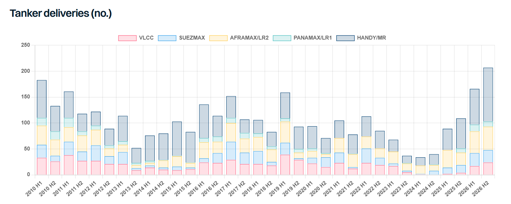

After a chaotic 2025 dominated by tariffs, trade wars, actual wars and sanctions, it seemed hard to imagine 2026 could trump the chaos of last year. Yet, that thesis was proven wrong after just three days with the US President using 2025 as a warmup lap.
Capture Maduro!
After applying pressure via a naval blockade and military buildup, on the 3rd of January, the US undertook a stunning operation to capture Venezuelan President Maduro. Since then, a combination of sanctions relief, policy reform and foreign investment has seen Venezuelan crude/DPP exports steadily recovering to reach a 6-year high. With Venezuela accounting for 8% of dark fleet employment last year, mainstream tankers have benefitted from a structural shift. Whilst it is unclear whether the country’s production will be impacted by this week’s earthquake, the country’s reopening has added to the tanker market momentum seen for the year to date.
Consolidate to dominate
Although the consolidation story started in 2025, the VLCC market really began to feel the impact of consolidation in the first few months of 2026 where aggressive chartering strategies propelled freight rates to the highest levels seen since the floating storage play of early 2020.
With just 10 operators now controlling 57% of the VLCC fleet, compared with less than 50% last year, the markets will remain volatile as operators increasingly use their scale to control tonnage supply.
Bombs away
Perhaps emboldened by the success of the Venezuela operation, at the end of February, Trump took his greatest gamble yet triggering an event which had been debated and feared for decades. Yet few thought the Straits of Hormuz would ever be closed, and if it was, surely the might of the US military would swiftly reopen it? With the Strait closed, and no one seemingly willing to pay the human and military cost to reopen it, oil markets were thrown into chaos. Tanker rates set new records (both theoretically and physically) as traders scrambled to secure cargoes from anywhere they could. Physical oil prices hit record levels and for a short period of time, freight rates became largely irrelevant. However, the oil markets showed remarkable resilience, aided by high oil stocks, both at sea and on land prior to the war, an IEA coordinated 400mbbl emergency release, Saudi Arabia and the UAE diverting cargoes via pipelines to avoid Hormuz and a reduction in demand, notably in Asia. Just as oil supply started to look critical it became apparent that more oil was gradually escaping Hormuz in coordination with the US military, the UAE and Oman. Finally, this month, with the US and Iran signing an interim peace deal, Hormuz reopened and vessel transits gradually increased, for now staving off the prospect of inventories running dry and oil prices setting new records.
Iran back in the black?
The deal to reopen Hormuz saw Iran earn temporary sanctions relief opening up the prospect for Iranian oil to return to the mainstream tanker markets, and paving the way for an eventual shift to mainstream tankers. For now, the UK, EU and UN sanctions may prohibit this, yet the prospect of mainstream tankers gaining access to the Iranian market moves ever closer.
OPEXIT
In 2025, much debate surrounded whether OPEC would once again have to rein in production to prevent oil prices crashing in what most analysts predicted would be a heavily oversupplied oil market. Whilst that argument evaporated following the closure of Hormuz, it wasn’t enough to deter the UAE from wanting to free itself from the shackles of quotas. Now, with Hormuz flows resuming, UAE crude exports are already surging, averaging at record levels of 3.6mbd so far this month. Reports have suggested that Iraq too may be considering its own future in the group.
Robot Wars
With all eyes on Iran and the world in the midst of an unprecedented energy crisis, Russia initially benefitted not just from higher oil prices, but also from sanctions waivers issued by the United States, allowing India to temporarily increase Russian imports, alongside its first Iranian cargo since 2019. Yet despite one of the largest energy crises in history, the EU issued its 20th sanctions package, doubling down on efforts to weaken Russia.
However, the real pressure on Russia came not from sanctions, but from Ukraine’s battlefield effectiveness, particularly its growing success in targeting Russian refineries with long range drones. With Russian refineries under constant attack, fuel shortages have hit the country, leading Russian CPP exports to a record low. Conversely, crude exports hit a record high in May as lower refinery activity forced higher crude exports. Now, with the oil price softening, product exports under pressure, and growing Ukrainian capabilities, the pressure on Putin continues to grow. Despite all of this, it remains hard to envisage an end to the war.
Regulatory Relapse?
After all the drama last December, with the US and its allies successfully blocking the IMOs Net Zero Framework (NZF), the IMO appeared to make progress again this year. However, even if an amended version of the NZF is approved, the US and its allies may still threaten sanctions on anyone enforcing it against US interests. Nevertheless, in a best-case scenario, the NZF would not come into force until 2029 at the earliest, albeit unlikely. So, for shipowners, the wait for regulatory certainty goes on.
Orders Up!
Despite all the geopolitical and regulatory uncertainty, shipowners have shown very little hesitation in putting their money where their mouth is. Total tanker orders >25kdwt have already exceeded last year’s total. 2026 is already a record year for VLCC orders, with half the year still left. Overall, the total orderbook stands at 21%, ranging from 35% for VLCCs to just 13% for the LR1s. Suezmaxes have also seen heavy investment, with the orderbook having risen to 30%. Just like the IMO NZF, investment in alternative fuels has also stalled. Less than 5% of tanker orders placed so far this year have been for dual fuel or dual fuel ready, compared to 11% last year and 19% in 2023. In terms of fleet growth, new deliveries from shipyards reached a 16 year high over the last 6 months, heavily weighted towards Afra/LR2s and MRs. Conversely, scrapping remained exceptionally low, with just 8 tankers sold for scrap, vs. 20 for the same period of 2025.
Price Pressure
Inflationary pressure, yard capacity and strong spot markets continue to influence newbuild prices. Prices for newbuilds are up on average 5% this year, depending on the size, whilst modern secondhand values gained 15% as exceptional spot markets and long shipyard lead times kept prices elevated.
Fasten Your Seatbelts
The second half of the year looks as equally uncertain as the first. Peace in the Middle East is far from guaranteed, whilst the War in Ukraine rages on. Tariffs and trade wars have been put on the backburner but could reemerge. Fleet growth is rising whilst scrapping remains low, yet the process to rebuild oil inventories could help sustain higher fleet growth into 2027.

Data source:Gibson Shipbrokers